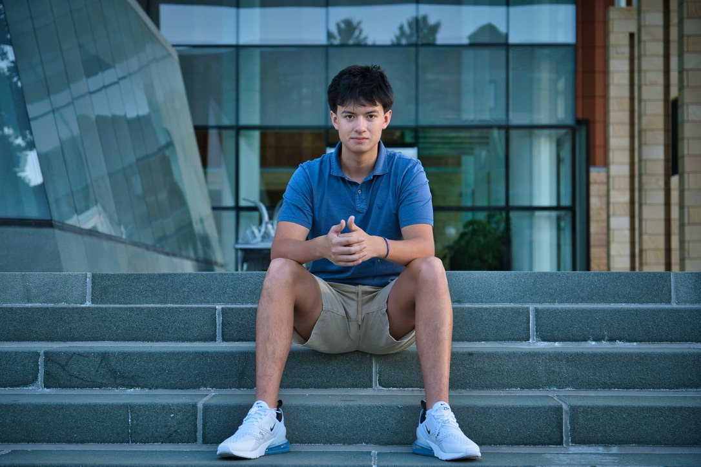

AWS certification In progress
CNAP club, Purdue University
Studying for an AWS certification with the CNAP club. I've just started, and I'll move this to Skills once I pass.
I'm a statistics student at Purdue studying data science. I've built a machine-learning study, a hackathon web app, and an alert system used by a National Honor Society chapter.
Drag any point, or focus one and use the arrow keys. The amber line is the least-squares fit; dashed segments are residuals.
I'm a sophomore at Purdue in West Lafayette, studying statistics with a data science focus and a certificate in entrepreneurship. I'm originally from Dexter, Michigan. This fall I started as a research assistant and began working toward an AWS certification.

IB Extended Essay
A machine-learning study comparing three supervised algorithms on their ability to predict real-world housing prices.
Hello-World Hackathon, West Lafayette, IN
A full-stack web app that brings Purdue's academic tools together in one AI-powered platform.
National Honor Society
An automation tool that solves a recurring problem for an NHS chapter: missed volunteer commitments.
CNAP club, Purdue University
Studying for an AWS certification with the CNAP club. I've just started, and I'll move this to Skills once I pass.
Last updated September 2026
West Lafayette, IN
Dexter, MI
Purdue University
Working with a professor to build AI-ready databases for interface science research.
Ace Hardware
Helped customers choose hardware and home improvement products while handling transactions, inventory, and key cutting.
Skip's Huron Canoe Livery
Drove customers and equipment to river locations and maintained the watercraft, keeping the trip smooth for every group.
Email is the fastest way to reach me. I'm also on LinkedIn and GitHub.
carson.chan2007@gmail.com